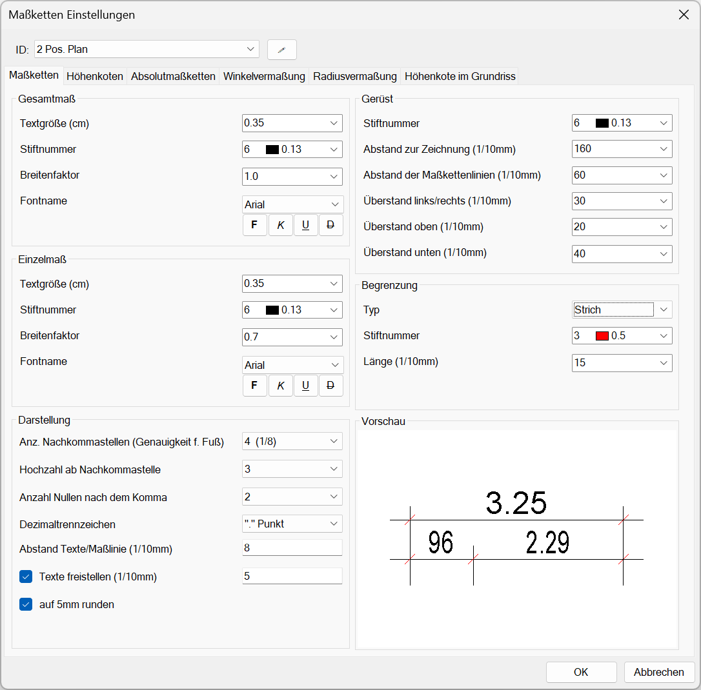
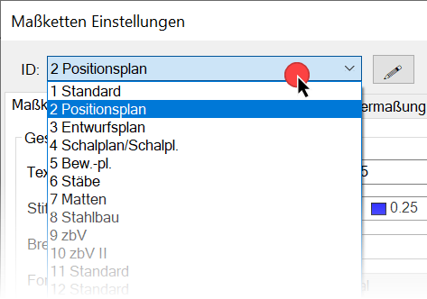
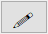
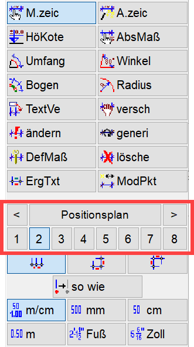
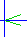
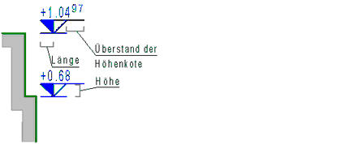
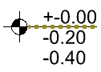

")
")
Stil-Konfiguration für die Darstellung von Bemaßungen. Öffnet den Dialog Maßketten Einstellungen zur Bearbeitung von Maßkettenstilen.
·Der Dialog enthält 20 Maßkettenstile, die über die Maßketten-ID ausgewählt, auf den Registerkarten bearbeitet und mit individueller Bezeichnung gespeichert werden können.
·Die Einstellungen auf den einzelnen Registerkarten (Maßketten, Höhenkoten, Absolutmaßketten, Winkel- und Radiusvermaßung, Höhenkote im Grundriss) werden pro ID gespeichert. Wenn z. B. ID-Nummer 2 aktiviert ist, werden Ihnen beim Umschalten der Registerkarten die Einstellungen der ID-Nummer 2 angezeigt.
·Für die Umfang- und Bogenvermaßung [Konst 1 | Maßket | Umfang/Bogen] gelten die Einstellungen auf der Registerkarte Maßketten.
·Nach Änderung der Einstellungen einer Maßketten-ID können Sie die Darstellung aller Bemaßungen in der Zeichnung, die diese ID verwenden, mit der Funktion Maßkette generieren aktualisieren.
·Alle Angaben von Abständen, Längen, Höhen und Radien werden in 1/10 mm angegeben. So entspricht z. B. die Angabe "200 1/10 mm" 2 cm auf der Zeichnung.
Optionen im Dialog "Maßketten Einstellungen"
 |
ID:
Auswahl der zu bearbeitenden Maßketten-ID.
Klicken Sie die Dropdown-Liste an, um diese aufzuklappen und wählen Sie die ID aus, die Sie bearbeiten möchten. Im Dialog werden die Einstellungen der aktuell gewählten ID angezeigt.
 |
|
Tipps: |
|
·Sie können die IDs mit dem Mausrad durchscrollen, indem Sie den Cursor über die Dropdown-Liste bewegen und das Mausrad drehen. Dadurch können Sie schnell zwischen den IDs wechseln. Diese Funktionalität wird in allen Dropdown-Listen unterstützt. ·Wenn Sie Maßkettenstile aus ISBCAD Versionen vor ISBCAD 2023 nutzen, kann es sein, dass IDs zwei Bezeichnungen aufweisen (z. B. 4 Schalplan/Schalpl.). Das liegt an unterschiedlichen ID-Bezeichnungen derselben ID für Maßketten und Höhenkoten in der früheren ISBCAD Version. Sie können diese IDs umbenennen. |

ID umbenennen
Im Auslieferungszustand werden alle IDs mit "Standard" benannt.
Um eine ID umzubenennen, wählen Sie die ID aus und klicken Sie auf 
 |
Vorschau
Zeigt die Einstellungen für die gewählte Maßketten-ID als Vorschau an.
OK
Alle Einstellungen werden übernommen.
Abbrechen
Vorgenommene Änderungen an den Einstellungen werden verworfen. Die vorher eingestellten Parameter werden wieder aktiv.
Registerkarten
Nutzen Sie die Optionen auf den verschiedenen Registerkarten, um die Darstellung von Bemaßungen zu definieren.

Maßketten-Elemente
Gesamtmaß / Einzelmaß Textgröße (cm) Wählen Sie eine Textgröße aus der Auswahl oder geben Sie die gewünschte Größe ein. Stiftnummer Wählen Sie die Stiftnummer für die Maßzahlen. Die Stiftbreiten für die Druckausgabe können Sie in [Datei | Drucke/Plotte | Einst] einstellen. Breitenfaktor Wählen Sie für die Maße geeignete Breitenfaktoren. Für die Einzelmaße ist es sinnvoll, Breitenfaktoren unter 1.0 zu wählen. Zum Beispiel 0.7. Dadurch passen die Maßzahlen eher zwischen die Maßhilfslinien. Fontname Wählen Sie eine Schriftart aus der Liste aus. Es stehen nur die Schriftarten zur Verfügung, die in den Systemdaten eingestellt sind. [Option | SysDat → Fontauswahl]. Bei Windows® True Type Schriften können zusätzlich die Attribute "fett", "kursiv", "unterstrichen" und "durchgestrichen" gewählt werden. Darstellung Anzahl Nachkommastellen (Genauigkeit f. Fuß) Wir empfehlen vier Nachkommastellen. Damit lassen sich alle Maße genau anzeigen. Es werden nur die Nachkommastellen geschrieben, die ≠ 0 sind. 1.5100 wird somit 1.51 geschrieben. Hochzahl ab Nachkommastelle Für die Vermaßung im allgemeinen Hochbau werden die Millimeter als hochgestellte Zahlen geschrieben. Stellen Sie hier also eine Ñ3ì ein. Bezugsmaß ist generell der Meter. Stellen Sie den Wert auf Ñ2ì. Damit wird ein Maß von z. B. einem Meter nicht als Ñ1ì, sondern als Ñ1.00ì geschrieben. Dezimaltrennzeichen Wählen Sie zwischen einem Punkt oder einem Komma als Dezimaltrennzeichen. Abstand Texte/Maßlinie (1/10mm) Ist der Wert zu klein gewählt, wird die Maßlinie bei freigestelltem Text angeschnitten. Setzen Sie einen Haken in die Checkbox, wenn Maßzahlen automatisch freigestellt werden sollen. Damit wird verhindert, dass die Texte nicht von Schraffuren o. ä. verdeckt werden. Geben Sie einen Wert ein, um die Größe des Freistellungsbereiches zu definieren. Wenn der Wert gleich oder größer der Eingabe für Abstand Texte/Maßlinie ist, wird die Maßlinie von der Freistellung überdeckt. auf 5mm runden Mit dieser Einstellung werden die Maßzahlen auf 5 mm auf- oder abgerundet. Der tatsächliche geometrische Abstand von z. B. 5.4 cm wird als 5.5 cm vermaßt. ISBCAD rundet an den Grenzen x.25 cm und x.75 cm. Beispiele:
Gerüst Stiftnummer Bestimmen Sie die Stiftnummer für die Maßlinien und die Maßhilfslinien. Abstand zur Zeichnung (1/10mm) Voreinstellung des Abstands zwischen Geometrielinien und den Maßlinien. Dieser Abstand bezieht sich auf einen Fangpunkt, der beim Absetzen der Maßkette gewählt werden kann.
Abstand der Maßkettenlinien (1/10mm) Voreinstellung des Abstands zu einer vorhandenen Maßlinie. Wird auch bei Gesamtmaß benutzt. Geben Sie einen Abstand ein, mit dem neu erzeugte Maßketten abgesetzt werden sollen, wenn Sie eine Maßlinie als Referenzelement anklicken. Achten Sie beim Absetzen der Maßkette auf die Fangmarke und die Lage des Cursors. Überstand links/rechts (1/10mm) Geben Sie einen Wert für die Überstände der Maßlinie an. Überstand oben (1/10mm) Geben Sie einen Wert für den oberen Überstand der Maßhilfslinie an. Überstand unten (1/10mm) Geben Sie einen Wert für den unteren Überstand der Maßhilfslinie an. Begrenzung Typ Wählen Sie einen Strich, einen Pfeil oder einen Kreis als Maßbegrenzung. Stiftnummer Wählen Sie den Stift für die Maßbegrenzung. Höhe (1/10mm) Hier geben Sie die halbe Höhe des Pfeils an.  Länge/Radius (1/10mm) Geben Sie die horizontale Länge des Pfeils, des Striches oder den Kreisradius an. |
Texte Textgröße [cm] Wählen Sie jeweils eine Textgröße aus der Auswahl oder geben die gewünschte Größe ein. Stiftnummer Wählen Sie die Stiftnummer für die Maßzahlen. Die Stiftbreiten für die Druckausgabe können Sie in [Datei | Drucke/Plotte | Einst] einstellen. Breitenfaktor Wählen Sie für die Maße geeignete Breitenfaktoren Fontname Wählen Sie jeweils eine Schriftart aus der Liste aus. Es stehen nur die Schriftarten zur Verfügung, die in den Systemdaten eingestellt sind. [Option | SysDat → Fontauswahl]. Bei Windows® True Type Schriften können zusätzlich die Attribute "fett", "kursiv", "unterstrichen" und "durchgestrichen" gewählt werden. Linien Stiftnummer Bestimmen Sie die Stiftnummer für die Linien der Höhenkote. Länge der Höhenkote (1/10mm) Hier geben Sie das Maß für die halbe Breite des Dreiecks an. Höhe der Höhenkote (1/10mm) Geben Sie die Höhe des Dreiecks an. Überstand der Höhenkote (1/10mm) Geben Sie das Maß für den Überstand über das Dreieck hinaus an.  Darstellung Anzahl Nachkommastellen (Genauigkeit f. Fuß) Wir empfehlen vier Nachkommastellen. Damit lassen sich alle Maße genau anzeigen. Es werden nur die Nachkommastellen geschrieben, wenn sie ≠ 0 sind. 1.5100 wird 1.51 geschrieben. Hochzahl ab Nachkommastelle Für die Vermaßung im allgemeinen Hochbau werden die Millimeter als hochgestellte Zahlen geschrieben. Stellen Sie hier also eine Ñ3ì ein. Bezugsmaß ist generell der Meter. Anzahl Nullen nach dem Komma Stellen Sie den Wert auf Ñ2ì. Damit wird ein Maß von z. B. einem Meter nicht als Ñ1ì, sondern als Ñ1.00ì geschrieben. Dezimaltrennzeichen Wählen Sie zwischen einem Punkt oder einem Komma als Dezimaltrennzeichen. Abstand Texte/Maßlinie Geben Sie einen positiven Wert für den Abstand zwischen der oberen, horizontalen Höhenkotenlinie und dem Maßtext ein. Ist der Wert zu klein gewählt, wird die Höhenkote bei freigestelltem Text angeschnitten. Texte freistellen (1/10mm) Setzen Sie einen Haken in die Checkbox, wenn Höhenkotentexte automatisch freigestellt werden sollen. Damit wird verhindert, dass die Texte nicht von Schraffuren o. ä. verdeckt werden. Geben Sie einen Wert ein, um die Größe des Freistellungsbereiches zu definieren. Wenn der Wert gleich oder größer der Eingabe für Abstand Texte/Maßlinie ist, wird die Höhenkote von der Freistellung überdeckt. auf 5mm runden Mit dieser Einstellung werden die Maßzahlen auf 5 mm auf- oder abgerundet. Der tatsächliche geometrische Abstand von z. B. 5.4 cm wird als 5.5 cm vermaßt. ISBCAD rundet an den Grenzen x.25 cm und x.75 cm. Beispiele:
|
Einzelmaß Textgröße (cm) Wählen Sie jeweils eine Textgröße aus der Auswahl oder geben Sie die gewünschte Größe ein. Stiftnummer Wählen Sie die Stiftnummer für die Maßzahlen. Die Stiftbreiten für die Druckausgabe können Sie in [Datei | Drucke/Plotte | Einst] einstellen. Breitenfaktor Wählen Sie für die Maße geeignete Breitenfaktoren. Für die Einzelmaße ist es sinnvoll, Breitenfaktoren unter 1.0 zu wählen. Zum Beispiel 0.7. Dadurch passen die Maßzahlen eher zwischen die Maßhilfslinien. Fontname Wählen Sie jeweils eine Schriftart aus der Liste aus. Es stehen nur die Schriftarten zur Verfügung, die in den Systemdaten eingestellt sind. [Option | SysDat → Fontauswahl]. Bei Windows® True Type Schriften können zusätzlich die Attribute "fett", "kursiv", "unterstrichen" und "durchgestrichen" gewählt werden. Darstellung Anzahl Nachkommastellen (Genauigkeit f. Fuß) Wir empfehlen vier Nachkommastellen. Damit lassen sich alle Maße genau anzeigen. Es werden nur die Nachkommastellen geschrieben, die ≠ 0 sind. 1.5100 wird somit 1.51 geschrieben. Hochzahl ab Nachkommastelle Für die Vermaßung im allgemeinen Hochbau werden die Millimeter als hochgestellte Zahlen geschrieben. Stellen Sie hier also eine Ñ3ì ein. Bezugsmaß ist generell der Meter. Anzahl Nullen nach dem Komma Stellen Sie den Wert auf Ñ2ì. Damit wird ein Maß von z. B. einem Meter nicht als Ñ1ì, sondern als Ñ1.00ì geschrieben. Dezimaltrennzeichen Wählen Sie zwischen einem Punkt oder einem Komma als Dezimaltrennzeichen. Abstand Texte/Maßlinie (1/10mm) Vertikale Verschiebung der Maßtexte. Geben Sie einen positiven oder negativen Wert ein, um die Maßtexte vertikal in Bezug auf die Maßlinie zu verschieben. Ist der Wert zu klein gewählt, wird die Maßhilfslinie oder auch die Maßlinie bei freigestelltem Text angeschnitten. Abstand Texte/Maßhilfslinie (1/10mm) Horizontale Verschiebung der Maßtexte. Geben Sie einen positiven oder negativen Wert ein, um die Maßtexte horizontal in Bezug auf die Maßhilfslinien zu verschieben. Texte freistellen (1/10mm) Setzen Sie einen Haken in die Checkbox, wenn Maßzahlen automatisch freigestellt werden sollen. Damit wird verhindert, dass die Texte nicht von Schraffuren o. ä. verdeckt werden. Geben Sie einen Wert ein, um die Größe des Freistellungsbereiches zu definieren. Beachten Sie dabei den Wert für Abstand Texte/Maßlinie, um eine Überdeckung der Maßhilfslinien durch die Freistellung zu vermeiden. auf 5mm runden Mit dieser Einstellung werden die Maßzahlen auf 5 mm auf- oder abgerundet. Der tatsächliche geometrische Abstand von z. B. 5.4 cm wird als 5.5 cm vermaßt. ISBCAD rundet an den Grenzen x.25 cm und x.75 cm. Beispiele:
Gerüst Stiftnummer Bestimmen Sie die Stiftnummer für die Maßlinien und die Maßhilfslinien. Abstand zur Zeichnung (1/10mm) Voreinstellung des Abstands zwischen Geometrielinien und den Maßlinien. Dieser Abstand bezieht sich auf einen Fangpunkt, der beim Absetzen der Maßkette gewählt werden kann.
Abstand der Maßkettenlinien (1/10mm) Voreinstellung des Abstands zu einer vorhandenen Maßlinie. Geben Sie einen Abstand ein, mit dem neu erzeugte Maßketten abgesetzt werden sollen, wenn Sie eine Maßlinie als Referenzelement anklicken. Achten Sie beim Absetzen der Maßkette auf die Fangmarke und die Lage des Cursors. Maßkettenüberstand links/rechts (1/10mm) Geben Sie einen Wert für die Überstände der Maßlinie an. Maßkettenüberstand oben (1/10mm) Geben Sie einen Wert für den oberen Überstand der Maßhilfslinie an. Maßkettenüberstand unten (1/10mm) Geben Sie einen Wert für den unteren Überstand der Maßhilfslinie an. Begrenzung Typ Wählen Sie einen Strich, einen Pfeil oder einen Kreis als Maßbegrenzung. Stiftnummer Wählen Sie den Stift für die Maßbegrenzung. Länge (1/10mm) Geben Sie die horizontale Länge des Pfeils bzw. des Striches an. Höhe (1/10mm) Hier geben Sie die halbe Höhe des Pfeils an. Radius (1/10mm) Geben Sie den Kreisradius ein. |
Einzelmaß Textgröße (cm) Wählen Sie eine Textgröße aus der Auswahl oder geben Sie die gewünschte Größe ein. Stiftnummer Wählen Sie die Stiftnummer für die Maßzahlen. Die Stiftbreiten für die Druckausgabe können Sie in [Datei | Drucke/Plotte | Einst] einstellen. Breitenfaktor Wählen Sie für die Maße geeignete Breitenfaktoren. Für die Einzelmaße ist es sinnvoll, Breitenfaktoren unter 1.0 zu wählen. Zum Beispiel 0.7. Dadurch passen die Maßzahlen eher zwischen die Maßhilfslinien. Fontname Wählen Sie jeweils eine Schriftart aus der Liste aus. Es stehen nur die Schriftarten zur Verfügung, die in den Systemdaten eingestellt sind. [Option | SysDat → Fontauswahl]. Bei Windows® True Type Schriften können zusätzlich die Attribute "fett", "kursiv", "unterstrichen" und "durchgestrichen" gewählt werden. Darstellung Anzahl Nachkommastellen (Genauigkeit f. Fuß) Es werden nur die Nachkommastellen geschrieben, die ≠ 0 sind. 1.5100 wird somit 1.51 geschrieben. Hochzahl ab Nachkommastelle Optionale Darstellung des Winkels, z. B. 175.35 (Hochzahl ab Nachkommastelle = 2). Anzahl Nullen nach dem Komma Damit wird ein Winkel von z. B. 90° bei der Eingabe 2 als 90.00° geschrieben. Dezimaltrennzeichen Wählen Sie zwischen einem Punkt oder einem Komma als Dezimaltrennzeichen. Abstand Texte/Maßlinie (1/10mm) Vertikale Verschiebung der Maßtexte. Geben Sie einen positiven oder negativen Wert ein, um die Maßtexte vertikal in Bezug auf die Maßlinie zu verschieben. Ist der Wert zu klein gewählt, wird die Maßlinie bei freigestelltem Text angeschnitten. Abstand Texte/Maßhilfslinie (1/10mm) Horizontale Verschiebung der Maßtexte. Geben Sie einen positiven oder negativen Wert ein, um die Maßtexte horizontal in Bezug auf die Maßhilfslinien zu verschieben. Texte freistellen (1/10mm) Setzen Sie einen Haken in die Checkbox, wenn Maßzahlen automatisch freigestellt werden sollen. Damit wird verhindert, dass die Texte nicht von Schraffuren o. ä. verdeckt werden. Geben Sie einen Wert ein, um die Größe des Freistellungsbereiches zu definieren. Ist der Wert zu groß, wird die Maßlinie von der Freistellung überdeckt. auf 5mm runden (nur bei Radiusvermaßung) Mit dieser Einstellung werden die Maßzahlen auf 5 mm auf- oder abgerundet. Der tatsächliche geometrische Abstand von z. B. 5.4 cm wird als 5.5 cm vermaßt. ISBCAD rundet an den Grenzen x.25 cm und x.75 cm. Beispiele:
Gerüst Stiftnummer Bestimmen Sie die Stiftnummer für die Maßlinie. Begrenzung Typ Für die Maßbegrenzung wird der Typ "Pfeil" verwendet. Stiftnummer Wählen Sie den Stift für die Maßbegrenzung. Höhe (1/10mm) Hier geben Sie die halbe Höhe des Pfeils an. Länge (1/10mm) Geben Sie die horizontale Länge des Pfeils an. |
Texte Textgröße (cm) Wählen Sie eine Textgröße aus der Auswahl oder geben Sie die gewünschte Größe ein. Stiftnummer Wählen Sie die Stiftnummer für die Maßzahlen. Die Stiftbreiten für die Druckausgabe können Sie in [Datei | Drucke/Plotte | Einst] einstellen. Breitenfaktor Wählen Sie für die Maße einen geeigneten Breitenfaktor. Fontname Wählen Sie jeweils eine Schriftart aus der Liste aus. Es stehen nur die Schriftarten zur Verfügung, die in den Systemdaten eingestellt sind. [Option | SysDat → Fontauswahl]. Bei Windows® True Type Schriften können zusätzlich die Attribute "fett", "kursiv", "unterstrichen" und "durchgestrichen" gewählt werden. Linien Stiftnummer Bestimmen Sie die Stiftnummer für die Linien der Höhenkote. Darstellung Dezimaltrennzeichen Wählen Sie zwischen einem Punkt oder einem Komma als Dezimaltrennzeichen. Texte freistellen (1/10mm) Setzen Sie einen Haken in die Checkbox, wenn Maßzahlen automatisch freigestellt werden sollen. Damit wird verhindert, dass die Texte nicht von Schraffuren o. ä. verdeckt werden. Geben Sie einen Wert ein, um die Größe des Freistellungsbereiches zu definieren. Ist der Wert zu groß, wird das Höhensymbol von der Freistellung überdeckt. Optionen Kreis Radius des Kreises (1/10mm) Wählen oder geben Sie den Kreisradius des Höhensymbols ein. Lage Text Wählen Sie die Lage des Textes bezogen auf das Höhensymbol.
Abstand Text Symbol (1/10mm) Wählen oder geben Sie den horizontalen Abstand (Lage Text = rechts oben, rechts mittig) bzw. den vertikalen Abstand (Lage Text = oben links, oben mittig) zwischen dem Text und dem Höhensymbol ein. Überstand rechts (1/10mm) Wählen Sie einen Überstand der nach rechts verlaufenden horizontalen Linie am Höhensymbol. Die Option automatisch / max passt die Linienlänge an den längsten Höhentext an.  Überstand oben / unten / links (1/10mm) Wählen Sie den Überstand der nach oben, unten und links verlaufenden Linie. Optionen Dreieck Pfeilbreite (1/10mm) Wählen oder geben Sie das Maß für die Breite des Dreiecks an. Pfeillänge (1/10mm) Wählen oder geben Sie das Maß für die Höhe des Dreiecks an. Lage Text Wählen Sie die Lage des Textes bezogen auf das Höhensymbol. Abstand Text Symbol (1/10mm) Wählen oder geben Sie den horizontalen Abstand (Lage Text = rechts oben, rechts mittig) bzw. den vertikalen Abstand (Lage Text = oben links, oben mittig) zwischen dem Text und dem Höhensymbol ein. Überstand rechts (1/10mm) Wählen Sie einen Überstand der nach rechts verlaufenden horizontalen Linie am Höhensymbol. Die Option automatisch / max passt die Linienlänge an den längsten Höhentext an. |
Zugehörige Referenzen: